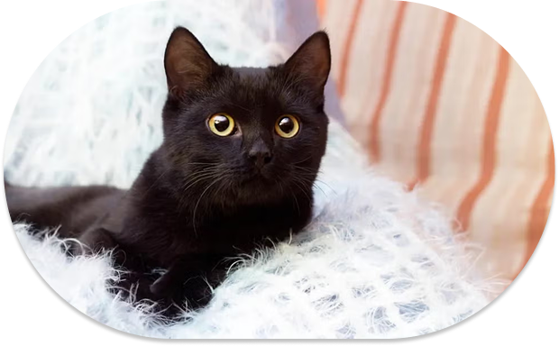

Oferecer uma experiência afetuosa e encantadora, onde o amor por cafés e a paixão por gatinhos se encontram para criar momentos de bem-estar, carinho e conexão.
Ser reconhecida como uma das cafeterias temáticas mais fofa e acolhedora do Brasil, referência em qualidade, originalidade e em iniciativas que promovam o respeito e cuidado com os animais.
Acolhimento e criatividade: criamos um ambiente onde o cliente se sente em casa — ou melhor, num colinho de gato!
Responsabilidade animal: apoiamos causas de proteção e adoção de felinos.
Qualidade artesanal: oferecemos bebidas e comidas temáticas feitas com carinho e ingredientes selecionados.
Nós como amantes dos felinos, não poderíamos deixar de apoiar a causa animal. A CoffeeCat doa parte dos seus lucros para instituições como:
ONG SALVAGATO (@ongsalvagato), MundoGato (@ongmundogato) e Só Gatinhos (@sogatinhosrp).
Essas ONGs recebem nosso auxílio, mas também podem receber o seu. Visite os perfis delas e faça parte dessa corrente do bem.